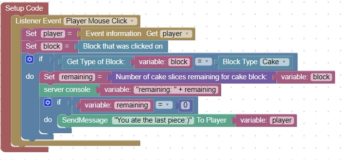

<h1>How to detect when a player eats cake</h1>
  Cake is a little different because it is consumed slice by slice<br>
  There are 6 slices in a cake<br>
  This code will detect when the last slice is consumed<br>
  <br>
<hr>
<center></center>